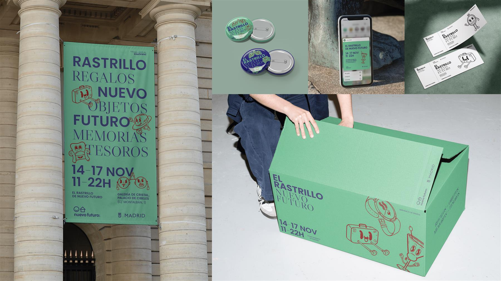
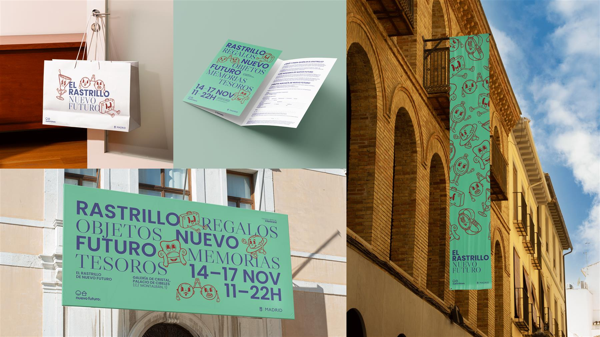
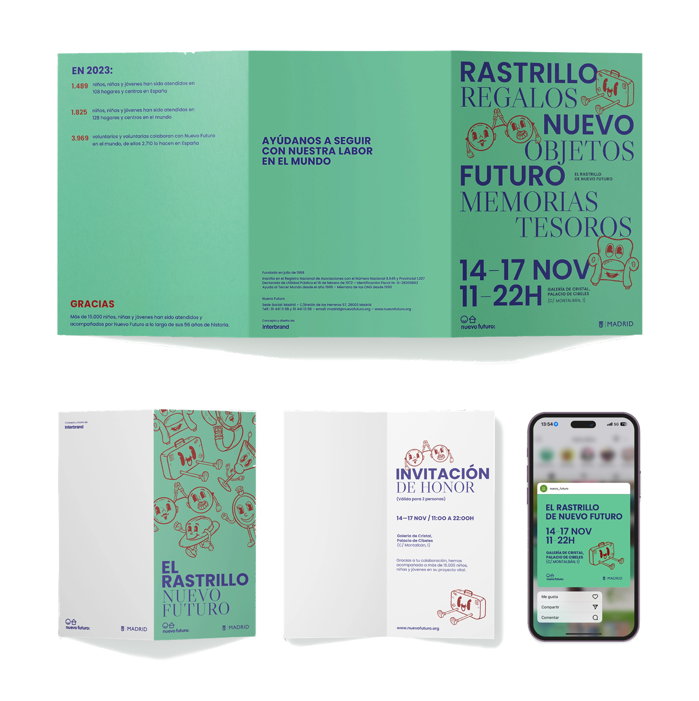

Project 04Art Direction & Campaign
Identidad visual para la edición 2024 del evento benéfico Nuevo Futuro — tradición que conecta con un público joven.
Una identidad visual completa para rejuvenecer este evento benéfico tradicional y conectarlo con un público más joven y cultural. La propuesta juega con una tipografía serif elegante y la personificación de objetos de segunda mano —maletas, sillones y relojes— que cobran vida con ilustraciones lineales de estilo retro, unificadas bajo una potente paleta verde menta.

Maletas, sillones y relojes de segunda mano personificados con ilustración lineal retro y una potente paleta verde menta. Tradición rejuvenecida para conectar con un público joven.
Una tradición que vuelve a ser deseable. El Rastrillo · Nuevo Futuro 2024

